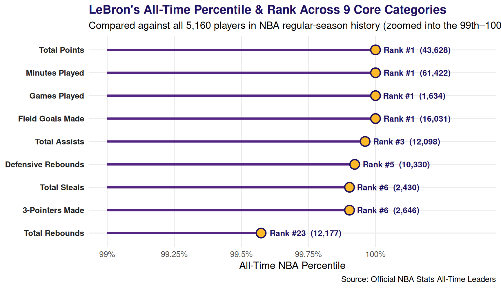

Why LeBron James Is the Greatest of All Time
A Statistical Exploration Across All 5,160 Players in NBA History
Every generation of basketball fans debates who owns the title of Greatest of All Time (GOAT). Pure scorers point to Michael Jordan, dominant big men point to Kareem Abdul-Jabbar or Wilt Chamberlain, and modern shooters point to Stephen Curry. Yet when we examine the complete historical record — 5,160 players in regular-season history and 3,016 players in NBA Playoff history — LeBron James stands completely alone as the most complete basketball player to ever live.
<div class="kpi-value">43,628</div>
<div class="kpi-label">Regular-Season Points (Rank #1 All-Time)</div><div class="kpi-value">8,521</div>
<div class="kpi-label">Playoff Points (Rank #1 All-Time)</div><div class="kpi-value">12,098</div>
<div class="kpi-label">Career Assists (Rank #3 All-Time)</div><div class="kpi-value">1 of 1</div>
<div class="kpi-label">Only Player with 40K+ PTS, 11K+ REB & 11K+ AST</div>1. Population One: The 3D Points–Rebounds–Assists Space
In basketball history, stars usually specialize: centers rack up points and rebounds, guards rack up points and assists, and wings score. Below are every one of the 414 players in NBA history who scored at least 10,000 career points.
Try it yourself: Drag to rotate the 3D cube and scroll to zoom. Notice how centers cluster along the Rebounds wall, point guards stretch along the Assists floor, and LeBron James floats by himself in the upper-top-right corner.
2. Elite Across Every Skill on the Floor
Out of 5,160 players who have ever logged an NBA minute, LeBron isn’t just #1 in scoring. He ranks near the very top of the entire league’s 78-year history in longevity, passing, perimeter defense, three-point shooting, and rebounding all at once.

Explore the Full Case
Use the navigation bar at the top to investigate every angle of the GOAT debate:
- Scoring & Playmaking — Zoom into all 5,160 players in NBA history and test whether LeBron’s scoring record comes from “just playing longer” or elite True Shooting efficiency.
- Longevity & Seasons — Trace season-by-season trajectories from Year 1 to Year 22+ against Jordan, Kareem, Kobe, Curry, and Durant.
- Playoffs & Clutch — Compare career postseason dominance across all 3,016 NBA playoff players.
- GOAT Explorer — Build your own head-to-head filter and search every player in NBA history.